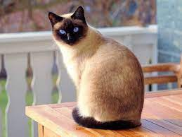
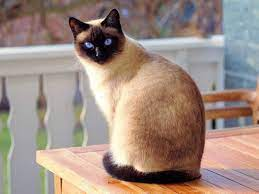

Welcome to the Cat site! This is where you can find random cat facts and random breeds
I am a person that loves cats and anything they do, even though they seem like little devils to many people
There are so many cat breeds, such as the Persian, the Sphynx, the Siamese, the Cournish Rex, so on and so forth!
This will be a place of random cat facts and pictures so have fun!!


 
